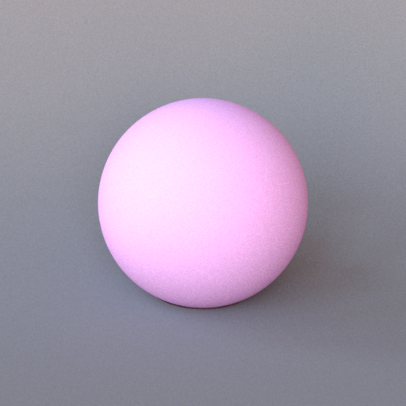
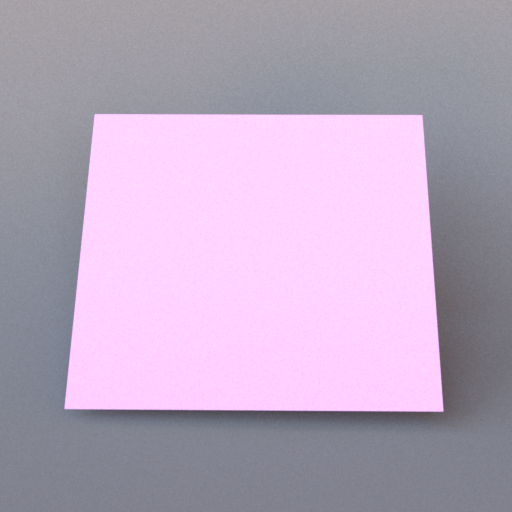
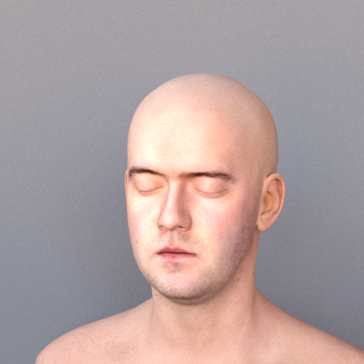
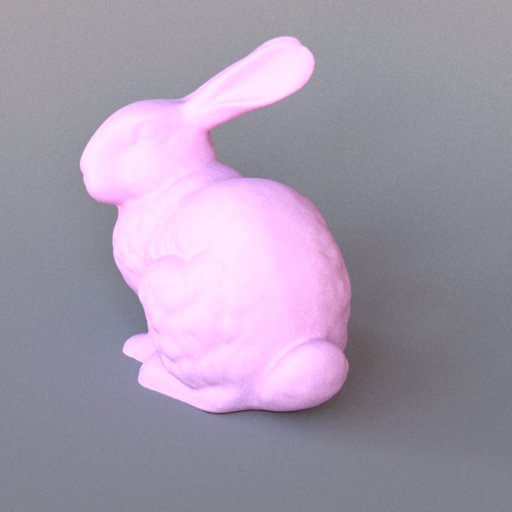
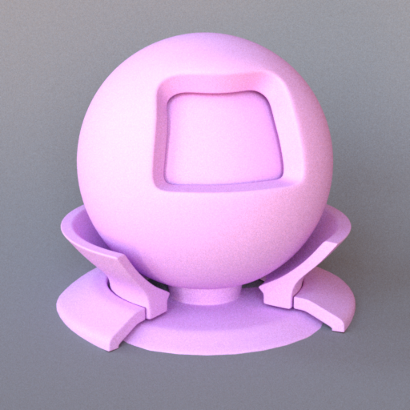
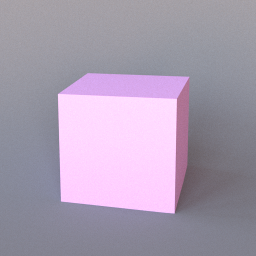

Shapes
All shapes accept a material, either inline or via <ref id="..."/>. Shapes can also host an inline area emitter using <emitter type="area">.
Sphere — type="sphere"

An analytic sphere. Intersection is computed exactly; no tessellation is involved.
Parameters
| Name | Type | Default | Description |
|---|---|---|---|
center |
point | 0, 0, 0 |
World-space centre position. |
radius |
float | 1 |
Sphere radius in world units. |
Example
<shape type="sphere">
<point name="center" x="0" y="0.5" z="0"/>
<float name="radius" value="0.5"/>
<ref id="glass_sphere"/>
</shape>
Emissive sphere:
<shape type="sphere">
<point name="center" x="0" y="2" z="0"/>
<float name="radius" value="0.2"/>
<emitter type="area">
<rgb name="radiance" value="15, 12, 8"/>
</emitter>
</shape>
Rectangle — type="rectangle"

A unit square in the XY plane, spanning [−1, 1] × [−1, 1] at Z = 0, with its normal along the Z axis. It therefore stands upright by default (think of a wall facing the camera). Use a transform to position, orient, and size it. Rectangles are commonly used for floors, walls, and ceiling lights.
Example — floor
The default rectangle is vertical, so lay it flat with a 90° rotation about the X axis before placing it:
<bsdf type="diffuse" id="floor">
<rgb name="reflectance" value="0.6, 0.5, 0.4"/>
</bsdf>
<shape type="rectangle">
<transform name="toWorld">
<scale x="5" y="5" z="1"/>
<rotate angle="90" x="1" y="0" z="0"/>
<translate x="0" y="-1" z="0"/>
</transform>
<ref id="floor"/>
</shape>
Note: because the default rectangle is upright, no rotation is needed to use it as a wall — just position it. Rotating 90° around the X axis lays it flat for a floor or ceiling (as above):
<rotate angle="90" x="1" y="0" z="0"/>
OBJ mesh — type="obj"

Loads a Wavefront OBJ file. Triangle faces are extracted and added to the scene individually. UV coordinates (vt entries) are parsed and forwarded to the material for texture sampling and normal mapping.
Parameters
| Name | Type | Default | Description |
|---|---|---|---|
filename |
string | (required) | Path to the .obj file, relative to the scene file. |
Transforms
| Element | Attributes | Description |
|---|---|---|
<scale> |
x, y, z |
Non-uniform scale. |
<translate> |
x, y, z |
World-space offset. |
<rotate> |
x, y, z, angle |
Axis-angle, degrees. |
Operations are applied in the order they appear.
Example
<bsdf type="diffuse" id="teapot_mat">
<texture type="bitmap" name="reflectance">
<string name="filename" value="teapot_albedo.png"/>
</texture>
</bsdf>
<shape type="obj">
<string name="filename" value="teapot.obj"/>
<transform name="toWorld">
<scale x="0.5" y="0.5" z="0.5"/>
<translate x="0" y="-1" z="0"/>
</transform>
<ref id="teapot_mat"/>
</shape>
PLY mesh — type="ply"

Loads a Stanford PLY file (binary or ASCII). Triangles are extracted in the same way as OBJ.
Parameters
| Name | Type | Default | Description |
|---|---|---|---|
filename |
string | (required) | Path to the .ply file, relative to the scene file. |
Supports the same <scale>, <translate>, and <rotate> transforms as OBJ.
Example
<bsdf type="diffuse" id="bunny_mat">
<rgb name="reflectance" value="0.7, 0.7, 0.8"/>
</bsdf>
<shape type="ply">
<string name="filename" value="bunny.ply"/>
<transform name="toWorld">
<scale x="10" y="10" z="10"/>
<translate x="0" y="-1" z="0"/>
</transform>
<ref id="bunny_mat"/>
</shape>
Serialized mesh — type="serialized"

Loads a mesh from Mitsuba's binary .serialized format (zlib-compressed). A single
.serialized file may pack many meshes; shapeIndex selects which one. This is the
format used by the larger bundled scenes (e.g. Sponza, the material preview).
Parameters
| Name | Type | Default | Description |
|---|---|---|---|
filename |
string | (required) | Path to the .serialized file, relative to the scene file. |
shapeIndex |
integer | 0 |
Index of the sub-mesh to load from the file. |
A <transform name="toWorld"> block (matrix form) positions the mesh.
Example
<shape type="serialized">
<string name="filename" value="sponza.serialized"/>
<integer name="shapeIndex" value="3"/>
<ref id="stone_wall"/>
</shape>
Cube — type="cube"

An axis-aligned cube spanning [−1, 1] on each axis, emitted as 12 triangles with flat (per-face) geometric normals. Position, orient, and size it with a transform.
Example
<shape type="cube">
<transform name="toWorld">
<scale x="0.5" y="0.5" z="0.5"/>
<translate x="0" y="0.5" z="0"/>
</transform>
<ref id="box_mat"/>
</shape>
Transforms
All mesh shapes (OBJ, PLY, serialized), the cube, and the rectangle accept a <transform name="toWorld"> block. Transforms are applied in scene-file order: typically scale first, then translate, then rotate.
<transform name="toWorld">
<scale x="2" y="1" z="2"/>
<translate x="0" y="0" z="-1"/>
<rotate angle="45" x="0" y="1" z="0"/>
</transform>
The <rotate> element takes an axis specified by x, y, z components (need not be normalised) and an angle in degrees.